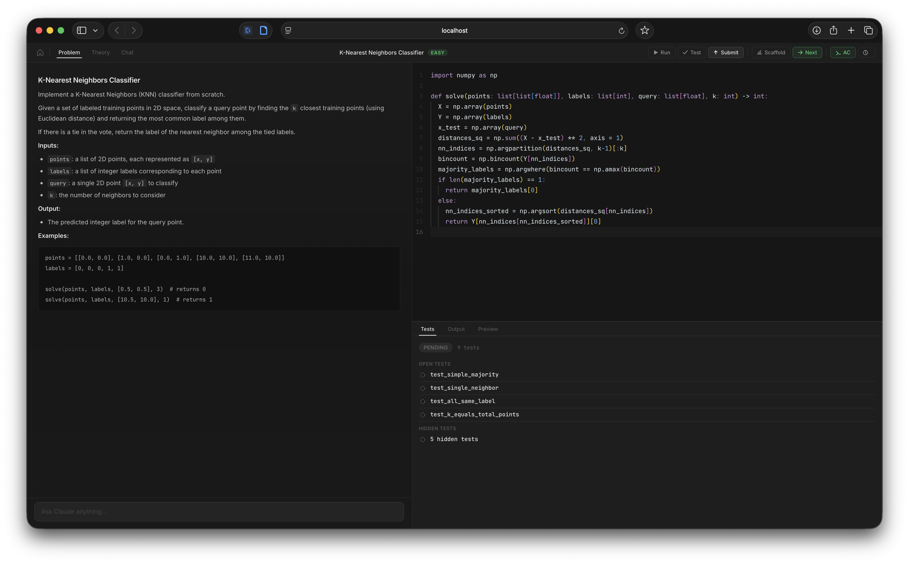

Claude generates problems matched to your role and skill level, reviews your solutions, and calibrates difficulty in real time.
pip install autocurricula
click to copy
Every problem is generated specifically for you. No two sessions are the same.
Claude creates a problem matched to your role, category rotation, and current difficulty level, including theory, tests, and a reference solution.
Write your solution in a full-featured editor with autocompletion, hover docs, and signature hints. Run tests instantly in a sandboxed environment.
Submit for hidden tests and Claude's review. Get a verdict with detailed reasoning on correctness, edge cases, and code quality.
The system tracks your solve rate and self-reported difficulty ratings to calibrate what comes next. Difficulty adjusts automatically.
Monaco editor with Python autocompletion, hover docs, and live test feedback.

A complete interview prep environment that learns from how you perform.
Problems get harder as you improve. Solve rate and self-reported difficulty drive the calibration, so you're always in the sweet spot.
Write Python functions with tests, or solve written math proofs, probability puzzles, and system design questions with LaTeX rendering.
Ask Claude for hints without getting the answer. It sees your code and problem context, guiding you toward the solution step by step.
Every problem comes with background material: formulas, derivations, algorithmic intuitions, and worked examples with LaTeX support.
Requires Python 3.11+ and the Claude CLI, installed and authenticated.
Run the command and your browser opens automatically.
Create a workspace for your target role and start practicing. Problems adapt to you from the first session.
Free, open source, and adapts to you. No account needed.